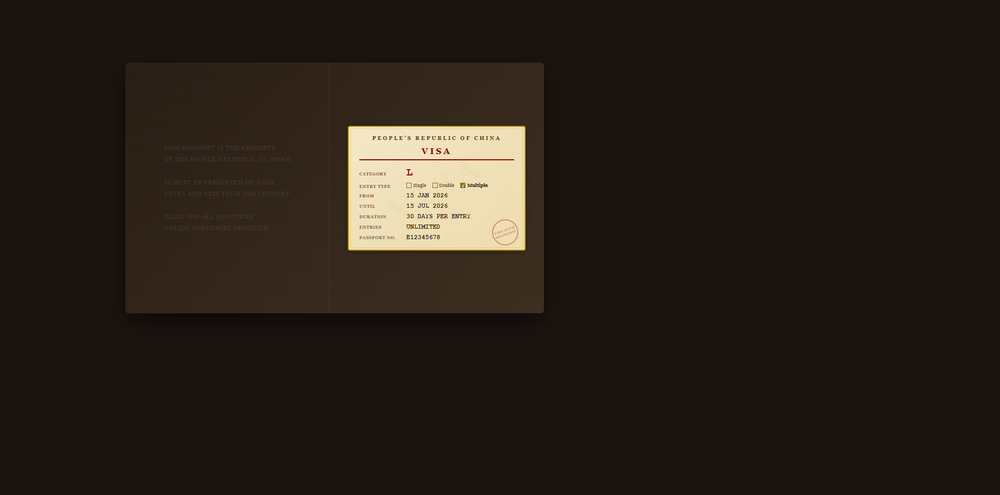
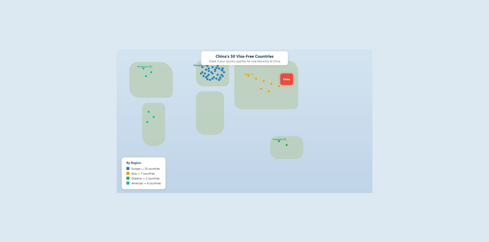
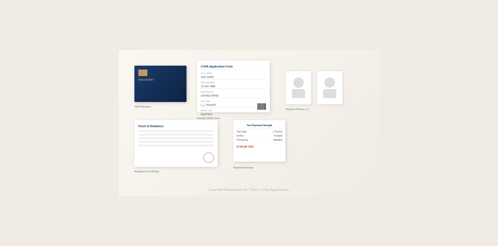
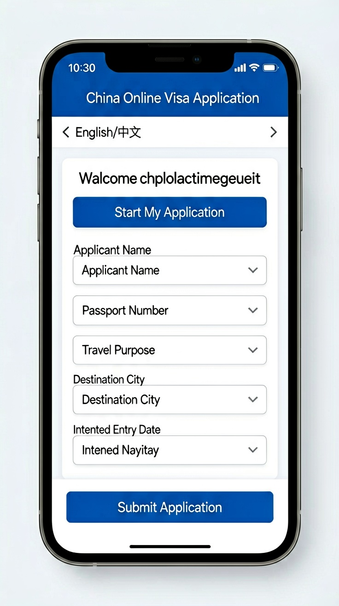

Last updated: June 2026.
For anyone planning a trip to China, the visa is often the most anxiety-inducing part of preparation. The problem is that information online is a mess — some sources still quote policies from years ago, others lump different visa types together. This guide is based on the latest announcements from China's Ministry of Foreign Affairs and the National Immigration Administration (NIA) as of June 2026. It covers the complete L-Visa path: checking whether you even need one, gathering documents, filling out the online form, submitting your application, and picking up your passport — with actionable steps at every stage.

The L-Visa is China's standard tourist visa, issued for tourism, visiting family or friends, and private visits. The "L" comes from the Chinese word for travel (旅游, lǚyóu). With an L-Visa, you can travel freely within mainland China, but you cannot engage in any paid work — this includes part-time work, performances, short-term training, and anything else that involves receiving a salary. Those activities require different visa categories. The L-Visa is also not valid for studying, long-term residence, or employment.
L-Visas come in three types based on the number of entries allowed:
| Type | What It Means |
|---|---|
| Single Entry | Valid for one entry only. Once you leave mainland China, the visa expires. This works for round trips with no side trips outside the mainland. |
| Double Entry | Allows you to exit and re-enter once. Example: Beijing → a few days in Hong Kong → back to Shenzhen. Any itinerary that involves leaving mainland China and returning requires a double-entry visa. |
| Multiple Entry | Unlimited entries and exits while the visa is valid. Common durations are 6-month and 1-year multiple entry (citizens of some countries may qualify for longer). Best for travelers who visit China frequently. |
The duration of stay for an L-Visa is typically 30 days per entry, though 60 or 90 days may be granted in some cases. The exact number is printed on your visa sticker — visa officers decide based on your application materials.
Validity and duration of stay are two separate things. "Validity" is the deadline by which you must enter China. "Duration of stay" is the maximum number of days you can stay after entering. Example: your visa is valid until June 30, with a 30-day stay. You must enter China by June 30. Once inside, you can stay for up to 30 days — even if those 30 days go past the June 30 validity date. Many travelers cut their trips short because they confuse these two concepts.
Before you start an application, check whether you already qualify for visa-free entry. As of June 2026, China grants unilateral visa-free access to citizens of 50 countries: you can enter without a visa for stays of up to 30 days, for tourism, business, visiting family or friends, and transit.
The 50 visa-free countries:
| Region | Countries |
|---|---|
| Europe (35 countries) | France, Germany, Italy, Netherlands, Spain, Switzerland, Ireland, Hungary, Austria, Belgium, Luxembourg, Poland, Slovenia, Portugal, Greece, Cyprus, Slovakia, Norway, Finland, Denmark, Iceland, Andorra, Monaco, Liechtenstein, Bulgaria, Romania, Croatia, Montenegro, North Macedonia, Malta, Estonia, Latvia, Russia, Sweden, United Kingdom |
| Oceania (2 countries) | Australia, New Zealand |
| Asia (7 countries) | Brunei, South Korea, Japan, Saudi Arabia, Oman, Kuwait, Bahrain |
| Americas (6 countries) | Brazil, Argentina, Chile, Peru, Uruguay, Canada |
Countries in bold were added between November 2025 and early 2026. Compared to earlier versions, this is a significant expansion — major source markets including Russia, the UK, Canada, Japan, and South Korea are now all covered.

Beyond unilateral visa-free access, China also offers a 240-hour (10-day) transit visa-free policy (expanded from the previous 144-hour/6-day policy in June 2025). This covers 55 countries and applies at 65 ports of entry across 24 provinces. If you're transiting through China to a third country or region, and your stay is under 10 days, you might not need an L-Visa. The list of eligible countries does not fully overlap with the unilateral visa-free list — the transit policy includes the US, Ukraine, Serbia, and others that are not on the unilateral list. Please check our dedicated transit visa-free guide for details.
If your nationality is not on the list above, or if your trip exceeds what the visa-free or transit policies allow, you'll need to apply for an L-Visa.
Since January 2024, L-Visa application requirements have been significantly streamlined. Many consulates no longer require round-trip flight bookings, hotel confirmations, detailed itineraries, or invitation letters. Here are the core documents you'll typically need:
| Document | Requirement |
|---|---|
| Passport | Valid for at least 6 months beyond your planned entry date, with at least 2 blank visa pages. If you have previous Chinese visas in an old passport, bring that too. |
| Visa Application Form | Complete online through the COVA system (consular.mfa.gov.cn/VISA/), print it out, and include the barcode confirmation page. All information must match your passport exactly. |
| Photo | Recent color passport photo, white background, 33mm × 48mm. Check your local visa center's website for exact specifications. |
| Proof of Legal Residence | If you're applying from a country other than your country of citizenship, you'll need your valid residence permit or visa for that country. |
Note: The above is a general checklist. Different countries and consulates may have additional requirements. The safest approach: go to the COVA system (consular.mfa.gov.cn/VISA/), select your city, and review the specific checklist it generates. You can also call your local China Visa Application Service Center to confirm.

On September 30, 2025, China launched the new COVA (China Online Visa Application) system across all consulates worldwide, replacing the old system. Here's the step-by-step process:
Go to the COVA system at consular.mfa.gov.cn/VISA/, create an account, and select "Start My Application." Follow the prompts to enter your personal information, passport details, travel plans, and other required fields. The system supports six languages: Chinese, English, Arabic, French, Spanish, and Russian.

After completing the form, submit it online and upload electronic copies of your passport information page, photo, and other required documents. The system will perform an initial review. You can check your application status through the "Application Progress" portal.
When the status changes to "Awaiting Passport Submission" (or similar wording), it means your initial review has passed. At this point, prepare your physical documents and head to the visa center or consulate to submit them in person.
Bring the following physical documents to your chosen Visa Application Service Center or consulate:
Some visa centers require on-site fingerprint collection (biometric data). Whether you need fingerprints and whether you need an appointment depends on your local visa center's policies — check their website. To find your local center: on the COVA homepage, select your country and city, and the system will redirect you to the corresponding visa center's website.
Pay the visa fee when you submit your documents. Accepted payment methods vary by center — some accept cards or mobile payments, others only cash or bank transfer. Check your visa center's website before you go to confirm what payment methods are available.
Standard processing is typically 4 business days, and express processing is 3 business days (this may vary by center or country). When you pick up your passport, verify that the name, passport number, validity dates, and duration of stay on the visa sticker are all correct. If you spot an error, flag it on the spot and request a correction.
Fees: L-Visa fees vary by nationality and number of entries. For US applicants, the current fee is a flat $140 for single, double, or multiple entry (this is a reduced rate, extended through December 31, 2026, as announced in December 2025 — the pre-reduction fee was $185). Express service costs an additional ~$25. For other nationalities, check your local visa center's website. Below are reference figures (for non-US citizens applying outside the US):
| Entry Type | Reference Fee (USD) |
|---|---|
| Single Entry | $23 |
| Double Entry | $34 |
| 6-Month Multiple | $45 |
| 12-Month+ Multiple | $68 |
Processing Time: Standard processing is usually 4 business days; express is 3. In some cases — such as when additional document review is needed or during peak seasons — it may take longer. Apply at least one month before your trip to avoid delays.
Validity Period: L-Visa validity varies by nationality and case-by-case assessment. Citizens of some countries (including the US, Canada, UK, and Argentina) may be granted a 10-year multiple-entry visa, though the final decision is at the visa officer's discretion. Note: a 10-year visa does not mean you can stay continuously for 10 years — the per-entry duration of stay is still what's printed on the visa sticker, typically 30 to 60 days.
Entry Tips: At the border, immigration officers may ask about your itinerary and accommodation address. It's a good idea to carry your hotel booking confirmations and return flight details — while these are no longer mandatory for the application, having them ready at entry can help things go smoothly. The entry stamp will show your permitted stay deadline — make sure you leave before that date. Overstaying can lead to fines, detention, or even entry bans. If you need to extend your stay, apply for an extension at the local exit-entry administration office before your stay expires.
Hong Kong and Macau Trips and Your Visa: If you hold a single-entry visa and plan to visit Hong Kong or Macau from the mainland, you need a double-entry or multiple-entry visa. Hong Kong and Macau have independent immigration control — leaving mainland China for either destination counts as an exit. If your itinerary includes a Hong Kong or Macau side trip, make sure to select double or multiple entries when you apply. If you're already in China on a single-entry visa and unexpectedly need to visit Hong Kong or Macau, you can consult local travel agencies or immigration offices there about applying for a new visa.
Visa Denial and Re-application: If your visa is denied, the visa center will inform you of the reason or issue a refusal notice. Common reasons include: application details not matching your passport, passport valid for less than 6 months, photo not meeting specifications, missing proof of legal residence (when applying outside your home country), or the consulate determining that your travel purpose is unclear. You can re-apply with corrected or additional materials — there's no mandatory waiting period, but the visa fee is non-refundable, and you'll need to pay again for a new application.
That covers the full L-Visa path, from determining whether you need one to filling out the online form, submitting your documents, and picking up your passport. If you're covered by the visa-free or transit visa-free policies, head over to our Arrival Guide and Payment sections. If you need an L-Visa, start now on the COVA system.
This article is based on information as of June 23, 2026.
Sources
Visa policies may change. Verify the latest requirements with your local visa center before applying.